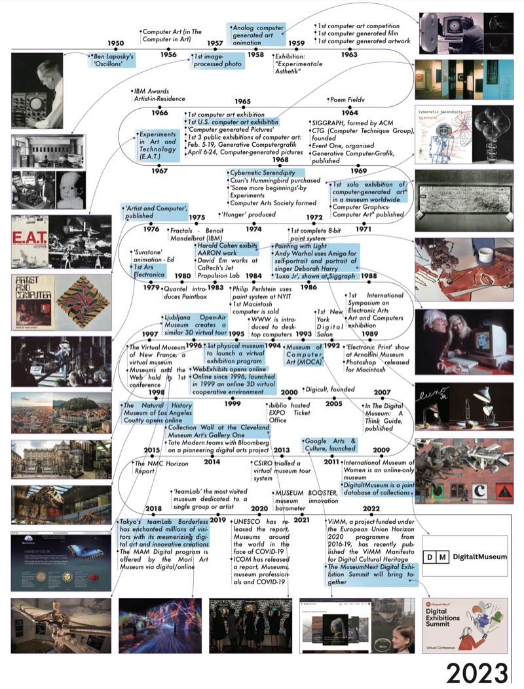
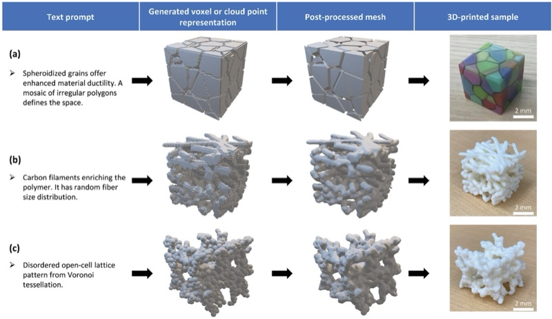
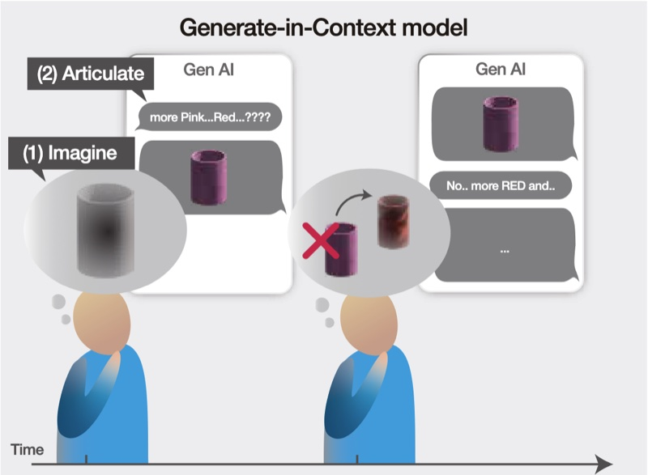
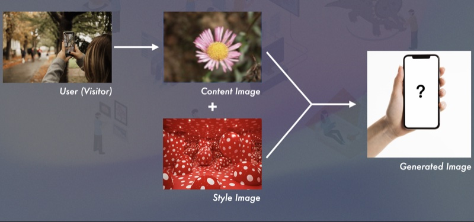
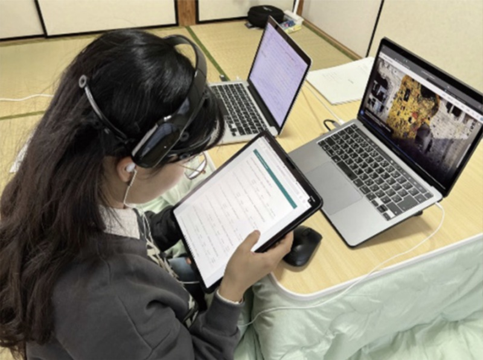
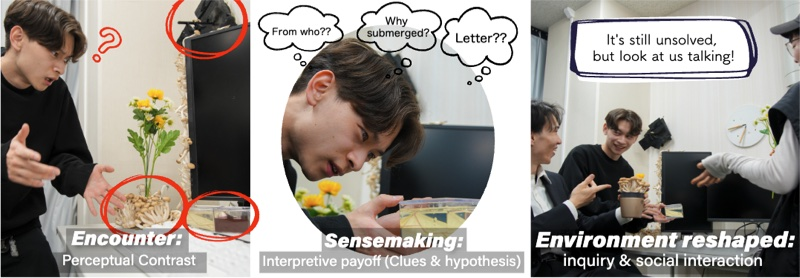
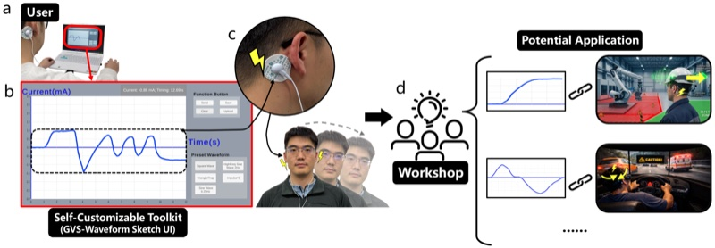

University of Tsukuba — Digital Nature
Jingjing
Li李 晶 晶
Project Assistant Professor (特任助教)
Digital Nature Group, Faculty of Library, Information and Media Science
University of Tsukuba
Human-Computer Interaction · Digital Exhibition · Computational Creativity

About
I am an Assistant Professor at the Digital Nature Group, Graduate School of Library, Information and Media Studies, University of Tsukuba. My research lies at the intersection of human-computer interaction, digital exhibition, and computational creativity, with a particular interest in how emerging media and AI reshape the way people generate, encounter, and interpret ideas.
I work on tools and systems that support the early, exploratory stages of creative thought, on physical and digital materials that mediate between human bodies and information environments, and on speculative framings that connect cultural imagination to technological practice.
Research
Digital Exhibition
Designing and evaluating exhibition formats — for museums, cultural heritage, and online platforms — that bring immersive technologies, computational artifacts, and generative media into public-facing settings.
User Evaluation of Digital Media
Studying engagement with digital experiences through psychophysiological signals (e.g., EEG), self-assessment, and bibliometric mapping of how immersive and AI-driven media reshape user behavior.
Communication Design
Investigating interfaces and computational tools that mediate communication between people, machines, and materials, including generative AI for user studies, mixed reality for embodied practice, and metamaterial-based interaction.
Publications
Source: University of Tsukuba TRIOS · Google Scholar · ORCID 0000-0002-6524-3105
Journal Articles
-
 J01
J01Metamaterial robotics
Science Robotics, 10(108), 2025 -
 J02
J02Discipline Together with the Self in Kendo: Exploring "Qi" through Mixed Reality and Autoethnography
Proceedings of the ACM on Computer Graphics and Interactive Techniques, 8(3), 2025 (SIGGRAPH 2025) -
 J03
J03Mapping the educational metaverse: a bibliometric analysis of trends, influences and future directions
Kybernetes, 2025 -
 J04
J04A bibliometric insight into immersive technologies for cultural heritage preservation
npj Heritage Science, 13(1), 2025 -
 J05
J05Generative artificial intelligence-guided user studies: an application for air taxi services
Behaviour & Information Technology, 2025 -

J06A systematic review of digital transformation technologies in museum exhibition
Computers in Human Behavior, 161, 2024 -
 J07
J07Metaverse chronicles: a bibliometric analysis of its evolving landscape
International Journal of Human–Computer Interaction, 2024 -

J08Text-to-Microstructure Generation Using Generative Deep Learning
Small, 2024 -
 J09
J09Unveiling trends in digital tourism research: A bibliometric analysis of co-citation and co-word analysis
Environmental and Sustainability Indicators, 2023 -
 J10
J10A bibliometric analysis of immersive technology in museum exhibitions: exploring user experience
Frontiers in Virtual Reality, 2023 -
 J11
J11Psychological distance and user engagement in online exhibitions: Visualization of moiré patterns based on electroencephalography signals
Frontiers in Psychology, 2022
International Conference Papers
-

C01OnomaCompass: A Texture Exploration Interface that Shuttles between Words and Images
Augmented Humans Conference (AHs), 2026 -
 C02
C02Visualizing the Electroencephalography Signal Discrepancy When Maintaining Social Distancing: EEG-Based Interactive Moiré Patterns
HCI International 2022 (LNCS 13322), pp. 185–197, 2022 -

C03Transformation of Plants into Polka Dot Arts: Kusama Yayoi as an Inspiration for Deep Learning
HCI International 2022, pp. 270–280, 2022 -

C04Electroencephalography and Self-assessment Evaluation of Engagement with Online Exhibitions: Case Study of Google Arts and Culture
HCI International 2022, pp. 316–331, 2022
Posters & Presentations
-

P01Life is Mystery: Reweaving Ordinary Spaces into Fluid Ecologies of Enchantment
CHI Extended Abstracts, 2026 -

P02Exploring Daily Applications of Wearable Galvanic Vestibular Stimulation via a Self-Customizable Toolkit
Augmented Humans Conference (AHs), 2026 -
 P03
P03Understanding How International Students Co-develop with AI when Facing Daily Challenges in Japan
Augmented Humans Conference (AHs), 2026 -
 P04
P04Birds of a Feather: Women in CG
SIGGRAPH Asia 2024
Preprints

Activities
Travels, talks, and reflections on academic encounters.
- 2026
-
Apr 2026 Visit to [University Name] [City, Country]

[Reflection paragraph: who you met, what you discussed, what surprised you, what stayed with you afterwards. 2–4 sentences works well; longer is fine if the encounter warrants it.]
-
Mar 2026 Talk at [Venue / Workshop] [City, Country]

[Reflection on the talk and audience response.]
- 2025
-
Nov 2025 [Event Name] [Location]
[Short reflection.]
Contact
I welcome inquiries from prospective collaborators, students, curators, and journalists.
- University
-
li@digitalnature.slis.tsukuba.ac.jp
jjli@slis.tsukuba.ac.jp - Personal
- jingjinglibrenda@gmail.com
- Profiles
- Google Scholar · ORCID · TRIOS · LinkedIn